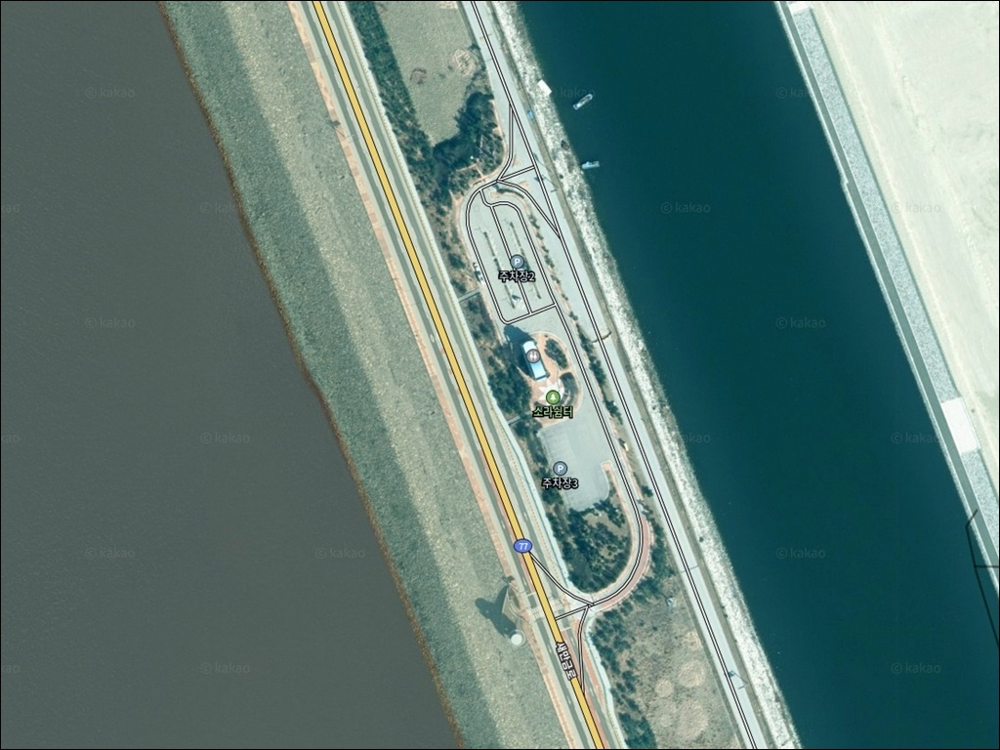
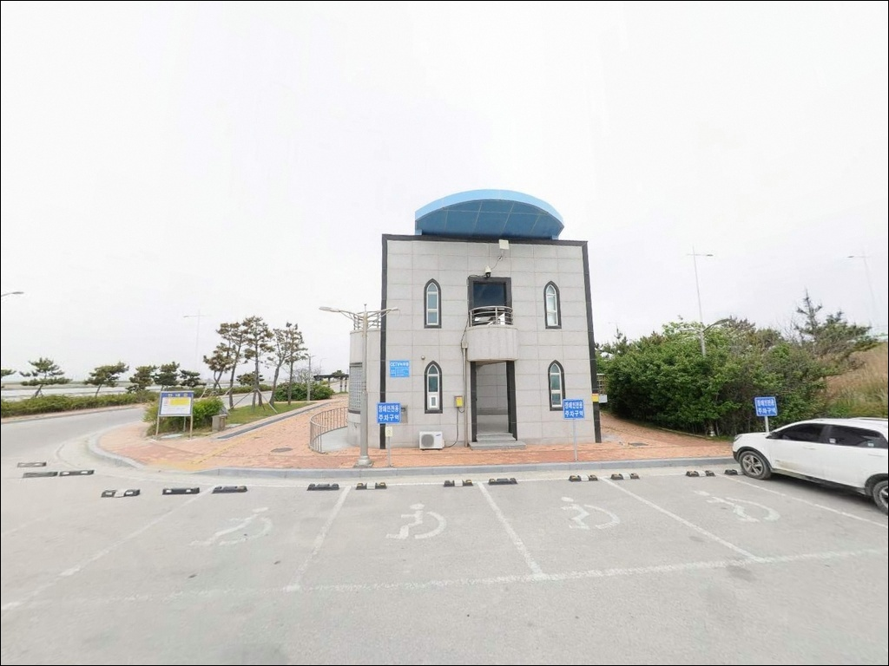
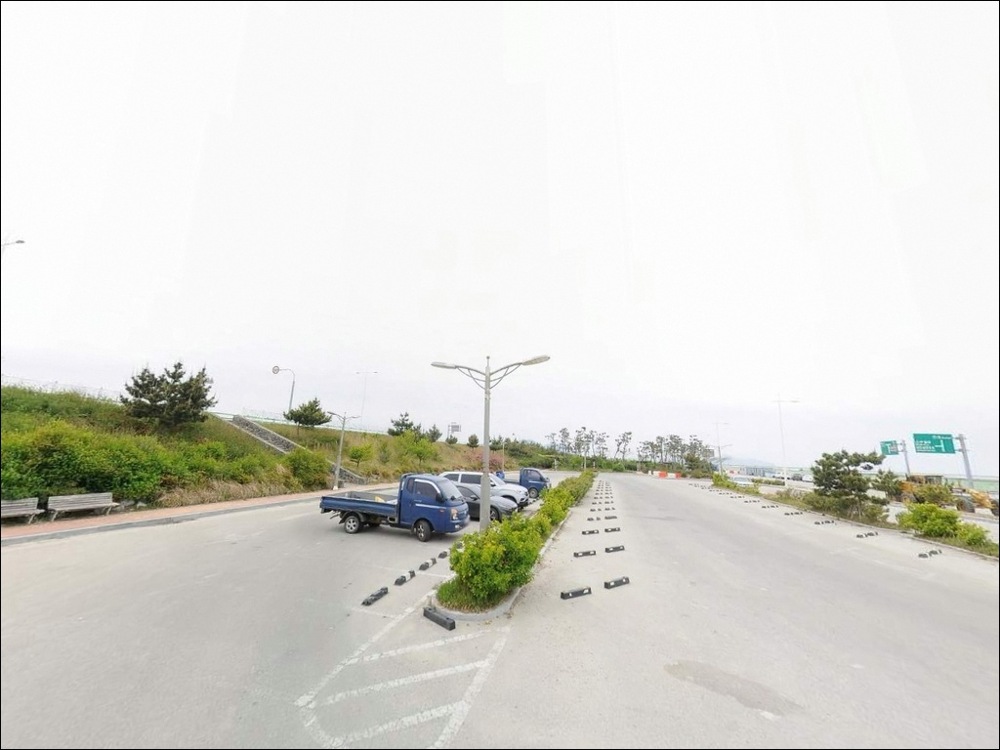
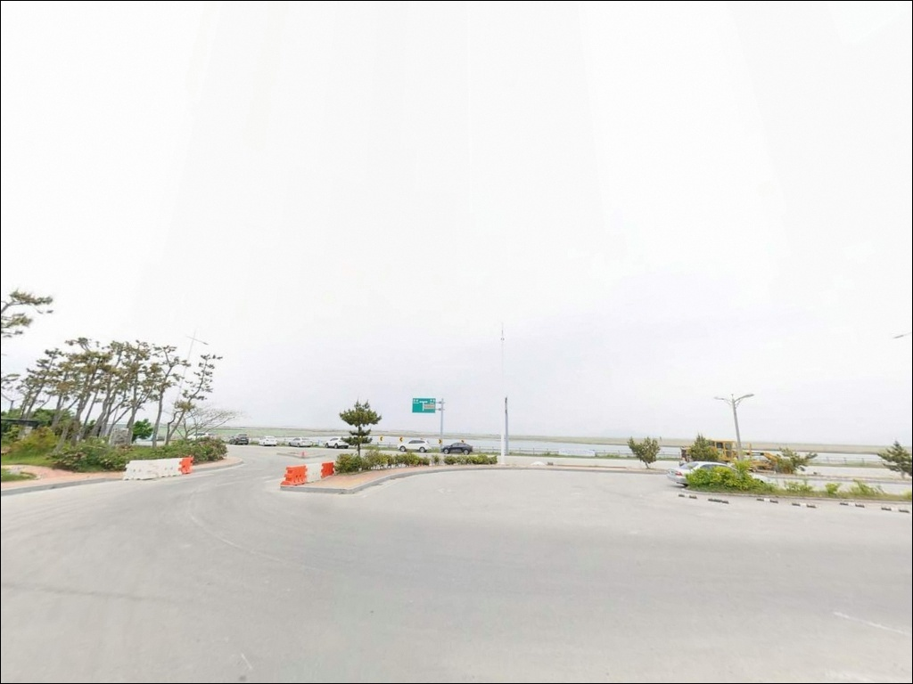
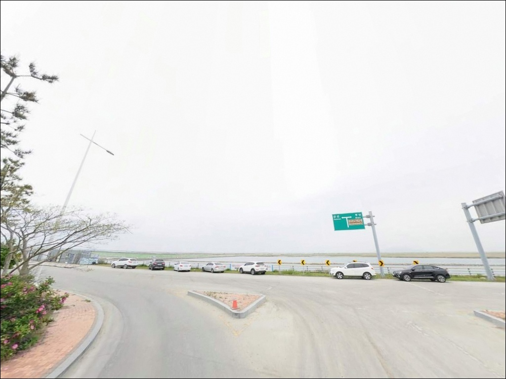
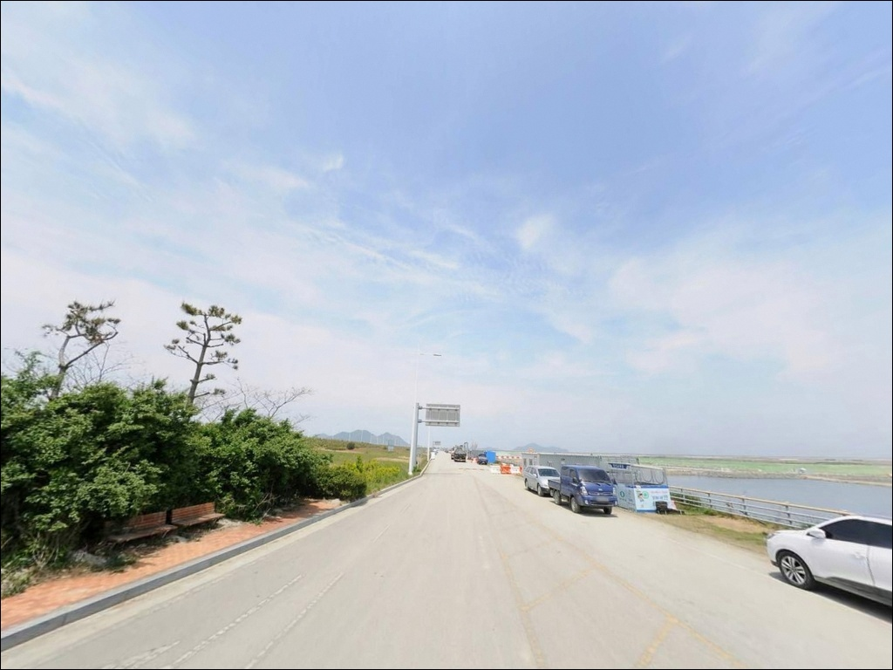
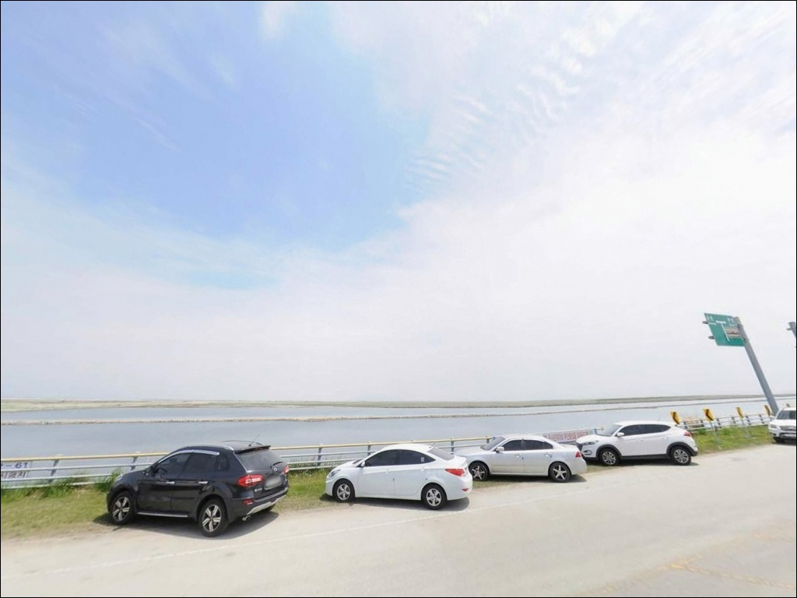
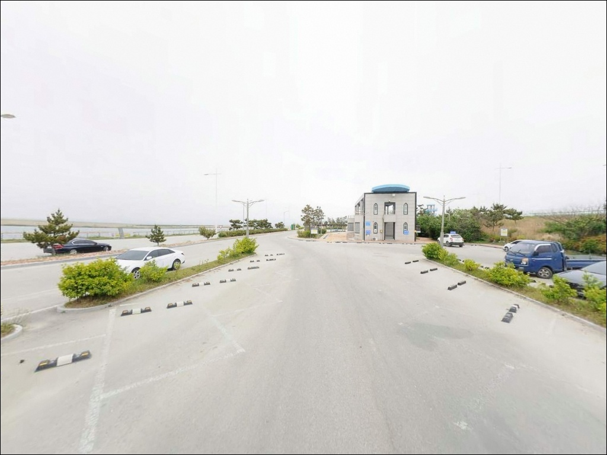
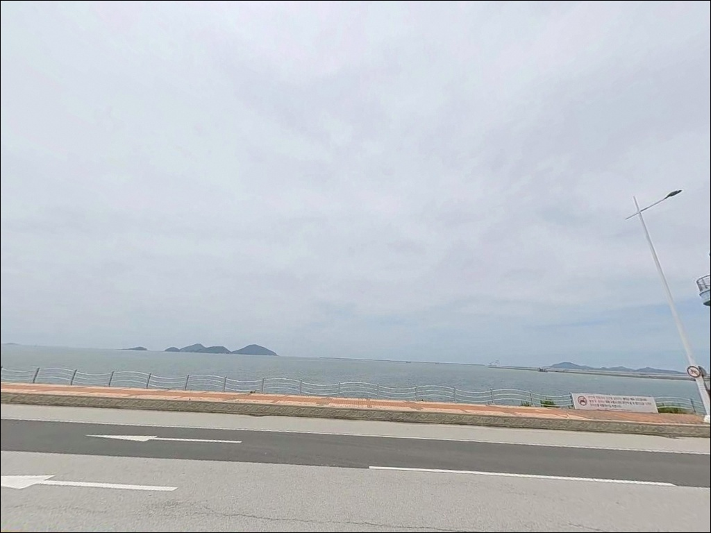

소라쉼터, 전북 김제시 자연 그대로의 분위기에서 차박, 낚시를 즐기기 좋은 포인트
이 페이지에는 광고(제휴 링크 포함)가 있으며, 광고 링크를 통해 구매하면 운영자가 판매 수익 또는 수수료를 받을 수 있습니다. 포인트 사진: 카카오맵 스카이뷰·로드뷰. 이 페이지의 지도·사진 이미지는 카카오맵의 실제 서비스 이미지와 다를 수 있습니다.


포인트 안내
소라쉼터
전북 김제시 진봉면 심포리 2431
새만금 방조제 외측에서 낚시를 시도할 때
물때를 놓치면 서해 조류가 너무 강해져
어떤 채비를 써도 컨트롤이 불가능해집니다.
석축에서 채비를 날려도 흐름에 쓸려버리는 구간이라,
입장 타이밍이 조과보다 먼저 결정됩니다.
소라쉼터는 새만금 방조제 2호 구간 위에 조성된
공공 쉼터입니다.
전망대와 주차장, 화장실을 갖춘 관광형 시설이지만,
서해 외측 석축 구간은
루어와 원투낚시가 가능한 실전 포인트로
낚시인들이 찾는 곳이기도 합니다.
이 글은
소라쉼터의 지형 구조와 낚시 가능 여건,
차박 체류 조건과 방문 전 판단 기준에 집중합니다.
조황 단정이나 특정 어종 보장은
이 글의 범위에 포함되지 않습니다.

1. 진입 동선과 주차 여건
소라쉼터는 새만금로(77번 국도)에서
직접 진입하는 구조입니다.
방조제 도로 위에 위치한 공공 쉼터라
전 구간 포장도로로 이어지며,
진입 난이도는 높지 않습니다.
쉼터 내부에 전용 주차장이 마련되어 있으며,
방조제 직선 구조 특성상 회차 공간도
넉넉한 편입니다.
대형 SUV나 루프박스를 올린 차량도
큰 어려움 없이 진입과 주차가 가능한 조건입니다.
군산 방면에서는 새만금로를 따라 남하하고,
부안 방면에서는 북상하는 방식으로 접근합니다.
쉼터 안내 이정표를 따라 진입도로로 들어오는 구조이므로,
내비게이션 안내만으로도
초행길에 충분히 찾아올 수 있습니다.

2. 차박 환경과 야간 체류 여건
소라쉼터는 관광형 공공 쉼터로 조성된 공간입니다.
전망대, 벤치, 어린이 놀이시설, 친수 공간 등이 배치되어 있어
야간 분위기는 완전한 노지 차박보다
휴게소와 유사한 공공 공간 느낌에 가깝습니다.
쉼터 내 조명 시설이 있어 야간 기준으로도
방조제 석축 외곽 구간을 제외하면
어느 정도 밝기가 유지되는 편입니다.
다만 민가가 없는 방조제 위 개방형 지형이라
바람이 강한 날에는 차 안에서도 체감이 클 수 있습니다.
출발 전 기상 예보에서 강풍 주의보 여부를 반드시 확인해야 합니다.
낚시를 마치고 차 안에서 짧게 쉬어가는 용도라면
소라쉼터는 나쁘지 않은 선택입니다.
장시간 차박을 계획 중이라면
바람 방향을 기상 예보로 미리 파악하고
차 방향을 조정해 두는 것이 체류 편의에 도움이 됩니다.


3. 주변 편의시설 및 인프라 현황
소라쉼터에는 화장실이 설치되어 있습니다.
한국농어촌공사에서 관리하는 공중화장실로,
남·녀 구분 화장실과 장애인 시설을 갖추고 있습니다.
기본 위생 시설은 이 구간에서 해결 가능합니다.
반경 3km 이내에는 편의점, 마트, 주유소 등의
생활 인프라를 기대하기 어렵습니다.
방조제 2호 구간 특성상 주변이 바다와 방조제로만 이루어진
완전 개방형 환경이기 때문입니다.
식수, 낚시 소품, 연료는 출발 전 완비하는 것이
현실적인 준비 방식입니다.
반경 10km권으로 이동하면
새만금 33센터 방면이나 부안·군산 방향으로
편의 시설을 이용할 수 있습니다.
이동 거리가 상당한 만큼
소모품은 사전에 넉넉하게 챙겨 두는 것이
낭비 없는 출조 준비입니다.

4. 방문 전 반드시 챙겨야 할 준비사항
소라쉼터 방문에서 가장 먼저 확인할 것은
물때입니다.
새만금 방조제 외측 서해는 조수 간만 차가 큰 구간이라,
사리 전후에는 조류가 세져
채비 컨트롤 자체가 불가능해질 수 있습니다.
바다타임에서 진봉면 기준 물때를 확인하고,
조금 전후 또는 간조~만조 전환 타이밍을
노려 입장 시각을 맞추는 것이 기본입니다.
방조제 석축 낚시에서 반드시 챙겨야 할 장비는
아이젠입니다.
석축 표면은 해조류와 이끼로 인해 매우 미끄러운 편이라,
일반 신발로 진입하면 낙상 위험이 있습니다.
아이젠 착용은 선택이 아니라 기본 준비로
낚시인 사이에서 굳어진 인식입니다.
석축 인근 구간에 펜스가 설치된 곳이 있을 수 있습니다.
진입 가능 여부는 현장 방문 시 직접 확인하는 것이 기본입니다.
야간 낚시라면 헤드랜턴과 구명조끼를 반드시 챙기고,
출발 전 기상청 해상 예보에서
강풍 주의보 여부를 마지막으로 확인하는 것이
안전한 방문 조건입니다.

5. 석축에서 낚시가 가능한 조건과 지형 변수
소라쉼터 앞 서해 외측은
방조제 전 구간에 걸쳐 대형 석재를 쌓은
경사형 석축 구조가 이어집니다.
석재 사이 공간이 많아 저서성 어종이 머물기 좋은 지형이며,
외측 수심은 석축 경사를 따라 빠르게 깊어지는 패턴입니다.
방조제 석축이란 파도와 조류를 막기 위해
대형 석재를 경사형으로 쌓아 만든 구조물입니다.
석재 사이 공간이 저서성 어종의 은신처 역할을 하며,
루어와 찌낚시가 이 지형과 잘 맞는 이유가 여기에 있습니다.
내측(새만금호)은 방조제 완공 이후 담수화가 진행된 상태입니다.
해수 유통이 차단된 구조라 수질이 외측 대비 낮은 편이며,
낚시 여건은 서해 외측 구간이 유효합니다.
내측의 기대치는 외측과 크게 다릅니다.
방조제 석축 외측은 물때를 맞추지 않으면
조류가 너무 강해 어떤 채비도 컨트롤이 어려운 구간입니다.
조류가 느려지는 조금 전후와 정조 타이밍을
먼저 계산하고 입장해야 이 포인트가 열립니다.
최신 조황은 출조 전에
"새만금 방조제 조황" 키워드로 검색해 보시기 바랍니다.


6. 소라쉼터 석축에서 시도해 볼 수 있는 낚시 스타일
방조제 석축의 지형 특성상
가장 잘 맞는 낚시는 루어낚시입니다.
석재 사이 공간을 파고드는 우럭(조피볼락)과 볼락 계열이
이 지형에서 기대해 볼 수 있는 어종이며,
웜+지그헤드 조합으로 석축 경계선을 천천히 탐색하는 방식이
이 구조에 맞는 루어 운용법입니다.
봄철 수온이 오르면서 활성도가 올라오는 경향이 있습니다.
원투낚시란 무거운 봉돌을 달아 멀리 캐스팅한 뒤
바닥층 어종을 기다리는 낚시 방식입니다.
방조제 위에서 외측으로 멀리 보내는 방식으로,
숭어와 망둑어 계열이 이 지형에서
기대해 볼 수 있는 어종입니다.
석축 경사 특성상 채비 회수 시
밑걸림에 주의하면서 천천히 끌어오는 것이 기본입니다.
가을철에는 갈치 루어낚시도 시도해 볼 수 있습니다.
새만금 방조제 인근 구간에서
가을 시즌 갈치 루어낚시가 이루어지는 편이며,
소라쉼터 외측 구간도 시즌 확인 후
야간 집어등을 활용한 방식으로 탐색해 볼 수 있습니다.
소라쉼터는 낚시 전용 포인트라기보다
새만금 방조제 석축을 탐색하는 거점으로 활용하기에 좋은 구조입니다.
방조제 라인을 따라 이동하면서
반응이 오는 구간을 찾는 탐색형 공략이
이 포인트를 효율적으로 쓰는 방식입니다.

7. 대안 포인트와 플랜 B 동선
소라쉼터 주차가 여의치 않거나
조류가 너무 강해 포인트 형성이 안 되는 날에는
같은 방조제 라인의 너울쉼터나 바람쉼터가
첫 번째 이동 대안입니다.
동일한 석축 구조를 갖추고 있어
낚시 조건은 비슷하지만,
주차 여건과 자리 확보 상황이 날마다 다를 수 있습니다.
야미도 인근 석축 구간은
새만금 방조제 낚시인들 사이에서
루어낚시 포인트로 알려진 곳입니다.
간조 전후 타이밍에 집중하는 경향이 있으며,
소라쉼터와 동일한 석축 구조를 공유하는 구간입니다.
과거에 유명했던 심포항은
새만금 방조제 완공 이후 해수 유통이 차단되면서
내수면항 성격으로 전환된 상태입니다.
예전과 낚시 환경이 크게 달라진 곳이라
방문 전 현재 조황을 반드시 검색해 보고
기대 수준을 조정해서 가는 편이 맞습니다.

물때와 바람을 파악하면
소라쉼터가 달리 보입니다
루어낚시나 원투낚시를 즐기는 낚시인이라면
소라쉼터의 석축 지형은
탐색해 볼 만한 조건을 갖추고 있습니다.
방조제 외측 서해는 물때가 맞으면
우럭·볼락 계열을 노리기 좋은 구조이며,
가을 갈치 루어 시즌에는
야간 포인트로도 활용 가능한 곳입니다.
반면 석축 미끄럼 대비 없이 진입하거나,
물때 확인 없이 사리 전후에 도착하면
낚시 자체가 성립하지 않는 상황을 만날 수 있습니다.
아이젠, 물때 확인, 자급 준비,
이 세 가지를 갖추고 간다면
새만금 방조제 석축의 특성을 제대로 즐길 수 있는 포인트입니다.
화장실과 주차장이 갖춰진 공공 쉼터 구조 덕분에
낚시 후 차 안에서 짧게 머무는 차박 여행자에게도
나쁘지 않은 선택입니다.
바람 방향만 파악해두면
서해 방조제의 탁 트인 노을 아래
낚시와 차박을 동시에 챙길 수 있는 출조가 됩니다.